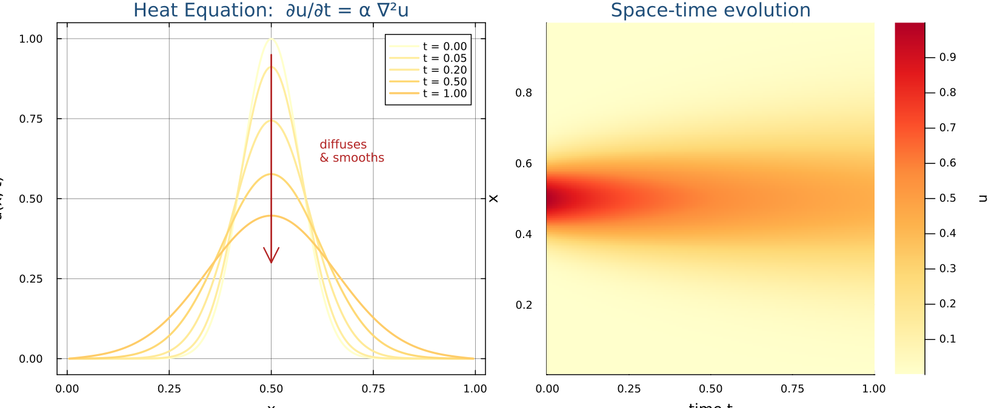
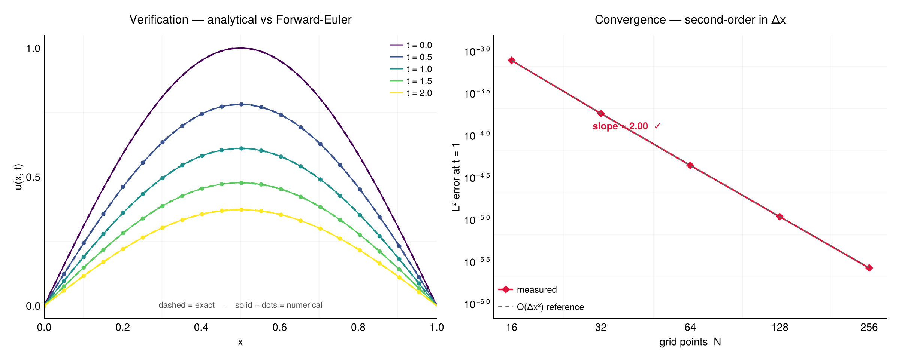
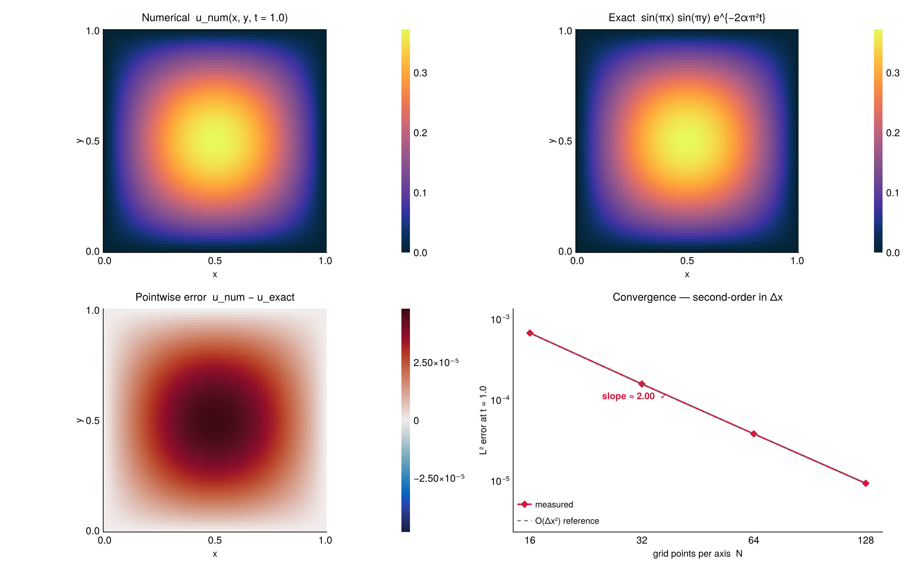
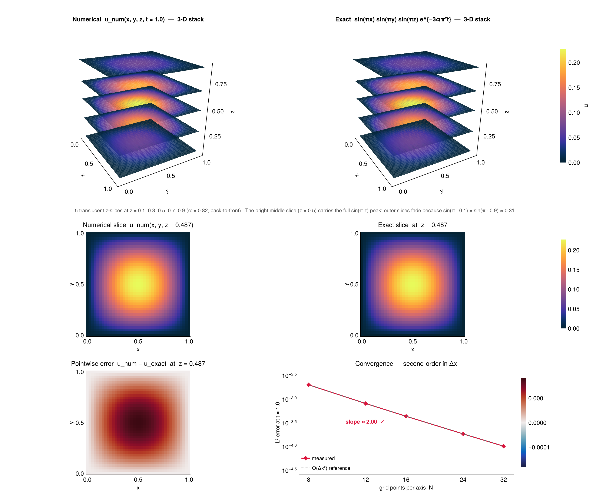
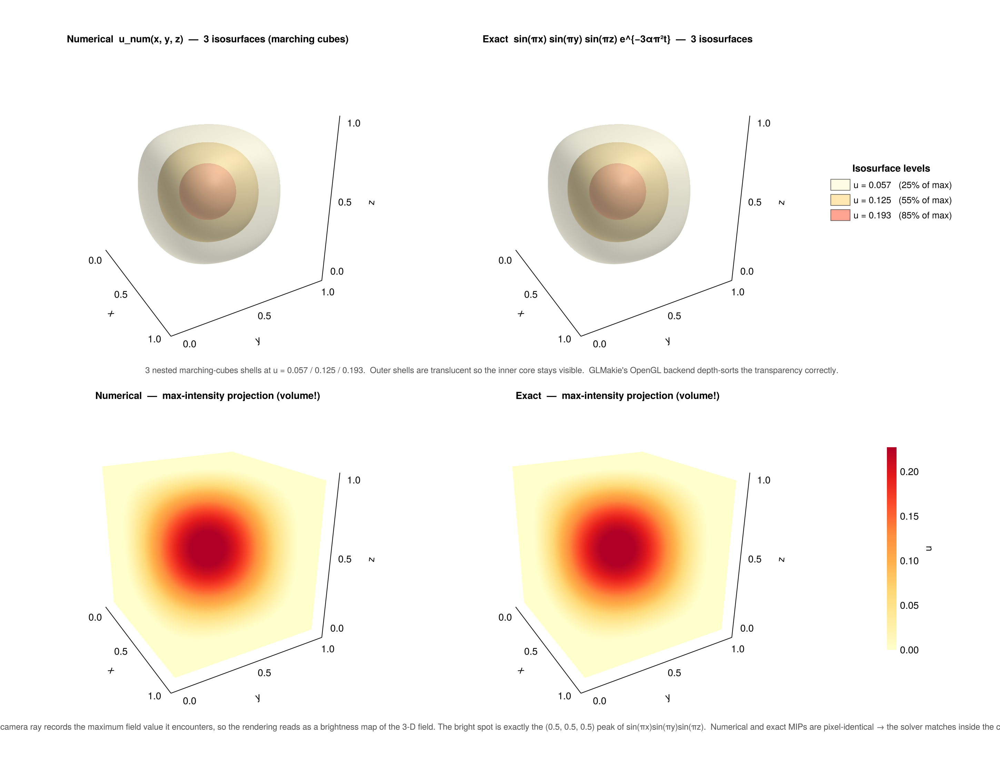

Heat Equation
Diffusion in any number of dimensions, from the first 1-D forward-Euler derivation through general Dirichlet boundary conditions and an implicit Crank–Nicolson solver built on a sparse Laplacian.
6.11-D derivation, line by line
The heat equation models how temperature (or any diffusing quantity — chemical concentration, smoke density, ink in water) smooths out over time. Heat flows from hot regions to cold ones at a rate proportional to the temperature gradient; that physical statement, written in differential form, is exactly $\partial u/\partial t = \alpha\,\partial^2 u/\partial x^2$. The diffusivity $\alpha$ controls how fast: a higher $\alpha$ smooths the profile out faster.
This is the simplest meaningful PDE you can write. Read the cards below as a single derivation: from the textbook equation on the left to the runnable Julia loop on the right, one transformation at a time.
Domain: $x \in [0, L]$, $t \in [0, T]$
BCs: $u(0,t) = u(L,t) = 0$
IC: $u(x,0) = e^{-100(x-0.5)^2}$ (Gaussian pulse)
N = 200 L = 1.0 dx = L / (N + 1) x = range(dx, L-dx, N) u = @. exp(-100*(x - 0.5)^2)
Rearrange to solve for the unknown $u_i^{n+1}$:
$u_i^{n+1} = u_i^n + \Delta t \cdot (\text{right side})$
# u holds u^n; after this line, u is u^{n+1}
u[2:end-1] .+= dt .* (right_side)
# ↑ 2:end-1 skips endpoints → BCs stay 0
right_side = (α / dx^2) .*
(u[3:end] .- 2 .* u[2:end-1] .+ u[1:end-2])
# u_{i+1} u_i u_{i-1}
$r$ is the diffusion number. Stable only when $r \leq \tfrac{1}{2}$.
# This single line IS the heat equation for one timestep: u[2:end-1] .+= (α * dt / dx^2) .* (u[3:end] .- 2 .* u[2:end-1] .+ u[1:end-2])
Use a safety factor (e.g. 0.4) to stay inside the stable region.
α = 0.01 dx = L / (N + 1) dt = 0.4 * dx^2 / α # r = 0.4 < 0.5 ✓ nsteps = ceil(Int, T / dt)
At iteration $n$ we hold $u^n$ (the field at time $n\Delta t$)
and overwrite it with $u^{n+1}$. After nsteps
iterations, $u$ holds $u(x, T)$. Every iteration costs the
same — one pass over the $N$ interior points.
In Julia the broadcast version u[2:end-1] .+= …
already reads from and writes into the same array
safely, because the right-hand-side is fully evaluated
before the assignment.
for n in 1:nsteps
u[2:end-1] .+= r .*
(u[3:end] .- 2 .* u[2:end-1] .+ u[1:end-2])
end
# After the loop: u ≈ u(x, T)
Lines 2–4: step 1 (grid + IC).
Lines 6–8: step 5 (dt & r from CFL).
Lines 10–13: step 6 (the time loop) wrapping step 4 (the one-line update).
We do not store the full $u(x,t)$ history — only the current
state. To plot snapshots you would either save copies inside
the loop, or wrap this in a package call like
solve(::HeatEquation) below.
function solve_heat_1d(N, α, T, Nt, f_init)
L = 1.0
dx = L / (N + 1)
x = collect(range(dx, L-dx, length=N))
u = f_init.(x) # IC sampled on the grid
dt = T / Nt
r = α * dt / dx^2 # diffusion number
for n in 1:Nt
u[2:end-1] .+= r .*
(u[3:end] .- 2 .* u[2:end-1] .+ u[1:end-2])
end
return x, u
end
x, u = solve_heat_1d(200, 0.01, 1.0, 2000,
x -> exp(-100*(x - 0.5)^2))
The same solver, packaged: juliaPDEs
Card 7 is the pedagogical version — it shows the loop. The
package wraps the exact same algorithm in a struct + a single
solve call so you can compose it (see §6.4 for
time-dependent BCs and §6.5 for the implicit version):
using juliaPDEs, Plots
# A 1-D Gaussian-pulse heat problem with zero Dirichlet boundaries.
grid = Grid(a = (0.0,), b = (1.0,), stepsize = (1/200,))
tg = TestGrid(grid,
((t,) -> 0.0,), # bc1 — lower face
((t,) -> 0.0,), # bc2 — upper face
(x,) -> exp(-100*(x - 0.5)^2)) # f_init
prob = HeatEquation(testgrid = tg, Nt = 2000, T = 1.0, α = 0.01)
sol = solve(prob) # forward Euler
plot(sol.x, sol.u, xlabel="x", ylabel="u(x,T)",
title="Heat equation T=1.0", lw=2)
Verification — does the scheme actually approximate the PDE?
The Gaussian-pulse run above looks plausible — the curve flattens out, that's diffusion — but plausibility isn't proof. To really know the discretisation is correct we need a problem with a closed-form answer. The single-mode initial condition $u(x,0) = \sin(\pi x)$ on $[0,1]$ with zero Dirichlet walls has the cleanest possible exact solution:
$$u(x, t) \;=\; \sin(\pi x)\,\cdot\,e^{-\alpha\,\pi^{2}\,t}$$Pure exponential decay of one Fourier mode. Figure 2 plots the numerical solution against this exact reference at five times, and tracks the discrete L² error $\bigl\lVert u_{\text{num}} - u_{\text{exact}} \bigr\rVert_{2}$ at $t = 1$ as the grid is refined. The two convergence rules from Section 7.2 predict that the central-difference stencil is $O(\Delta x^{2})$; the right panel measures it and gets a slope of 2.00 across every doubling.

Show the full CairoMakie script (juliaPDEs/verify_heat.jl)
Plotted with
Makie.jl
(CairoMakie backend) — the modern Julia plotting stack, built
for publication-quality static figures with a grammar-style API.
Reproducible with julia --project=. verify_heat.jl;
prints the per-doubling convergence order (2.000 / 2.001 / 2.003 /
2.011) and saves the figure to site/output/figures/.
using Pkg
Pkg.activate(".")
using juliaPDEs
using CairoMakie
using Printf, Statistics
# ── Problem: 1-D heat equation with a separable IC whose exact solution
# is just one decaying Fourier mode:
#
# ∂u/∂t = α ∂²u/∂x², x ∈ [0,1], u(0,t) = u(1,t) = 0
# u(x, 0) = sin(πx)
#
# ⇒ u(x, t) = sin(πx) · exp(-α π² t)
#
# Verifying that the numerical solution matches this exact answer is
# *the* sanity check that the discretisation is implemented correctly.
const α = 0.05
exact(x, t) = sin(π * x) * exp(-α * π^2 * t)
# Solve to time T on an N-point endpoint grid. We use Crank–Nicolson
# (θ = 0.5, unconditionally stable, O(Δt²) in time) so the temporal
# error stays well below the spatial error at every N — that lets the
# log-log slope in panel B come out cleanly at the expected 2 instead
# of being polluted by the FE temporal floor when h is small but Δt
# is held constant.
const NT_CN = 400 # Δt = T/NT_CN ≈ 0.0025–0.005 → temporal err ≪ spatial
function solve_to_fe(T_end::Float64, N::Int)
# Forward Euler — only used for the snapshot panel as a visual sanity check.
h = 1.0 / N
dt_cap = 0.4 * h^2 / α
Nt = max(500, ceil(Int, T_end / dt_cap))
grid = Grid(a = (0.0,), b = (1.0,), stepsize = (h,))
tg = TestGrid(grid, ((t,) -> 0.0,), ((t,) -> 0.0,), (x,) -> sin(π * x))
return solve(HeatEquation(testgrid = tg, Nt = Nt, T = T_end, α = α))
end
function solve_to_cn(T_end::Float64, N::Int; Nt::Int = NT_CN)
h = 1.0 / N
grid = Grid(a = (0.0,), b = (1.0,), stepsize = (h,))
tg = TestGrid(grid, ((t,) -> 0.0,), ((t,) -> 0.0,), (x,) -> sin(π * x))
return solve_implicit(HeatEquation(testgrid = tg, Nt = Nt, T = T_end, α = α);
θ = 0.5)
end
# ── Convergence study at fixed t = 1.0 ──────────────────────────────
Ns = [16, 32, 64, 128, 256]
errors = Float64[]
hs = Float64[]
println("Convergence study at t = 1.0 (Crank–Nicolson, Nt = $NT_CN):")
for N in Ns
sol = solve_to_cn(1.0, N)
x = sol.x
e = sol.u .- exact.(x, 1.0)
err = sqrt(sum(e .^ 2) * (x[2] - x[1])) # discrete L² with width
push!(errors, err)
push!(hs, x[2] - x[1])
@printf(" N = %4d h = %.4e ‖u_num − u_exact‖₂ = %.4e\n", N, x[2]-x[1], err)
end
# Empirical convergence order between successive grids
println("\n empirical orders:")
for k in 2:length(Ns)
p = log(errors[k-1] / errors[k]) / log(hs[k-1] / hs[k])
@printf(" N %4d → %4d order ≈ %.3f\n", Ns[k-1], Ns[k], p)
end
# ── Snapshots at multiple times for the left panel ──────────────────
# Use forward Euler here so the snapshot panel showcases the actual
# §6.1 algorithm.
ts_plot = [0.0, 0.5, 1.0, 1.5, 2.0]
snaps = Dict{Float64, Any}()
for t in ts_plot
snaps[t] = t == 0.0 ? nothing : solve_to_fe(t, 200)
end
# ── Build the figure ────────────────────────────────────────────────
set_theme!(theme_minimal())
update_theme!(
fontsize = 14,
backgroundcolor = :white,
Axis = (
backgroundcolor = :white,
xgridcolor = (:gray, 0.18),
ygridcolor = (:gray, 0.18),
xminorgridvisible = true,
yminorgridvisible = true,
xminorgridcolor = (:gray, 0.08),
yminorgridcolor = (:gray, 0.08),
spinewidth = 1.0,
xtickwidth = 1.0,
ytickwidth = 1.0,
titlefont = :regular,
titlesize = 16,
titlegap = 12,
xlabelfont = :regular,
ylabelfont = :regular,
xlabelsize = 14,
ylabelsize = 14,
),
)
fig = Figure(size = (1200, 480))
# Panel A — exact vs numerical snapshots ────────────────────────────
ax1 = Axis(fig[1, 1],
xlabel = "x",
ylabel = "u(x, t)",
title = "Verification — analytical vs Forward-Euler",
xticks = 0:0.2:1.0,
)
xlims!(ax1, 0, 1)
ylims!(ax1, -0.05, 1.05)
palette = cgrad(:viridis, length(ts_plot); categorical = true)
xs_fine = range(0, 1, length = 401)
# Plot order: exact line first (dashed), then numerical scatter + thin line.
for (i, t) in enumerate(ts_plot)
col = palette[i]
# Exact (dashed)
lines!(ax1, xs_fine, exact.(xs_fine, t),
color = col, linewidth = 2.4, linestyle = :dash)
if t == 0.0
# IC — solid line stand-in for the "numerical" curve (same as exact)
lines!(ax1, xs_fine, exact.(xs_fine, t),
color = col, linewidth = 1.5,
label = @sprintf("t = %.1f", t))
else
sol = snaps[t]
# Numerical: line + sparse markers so the overlay with the exact dash is visible
scatter!(ax1, sol.x[1:10:end], sol.u[1:10:end],
color = col, markersize = 8, marker = :circle, strokewidth = 0)
lines!(ax1, sol.x, sol.u,
color = col, linewidth = 1.5,
label = @sprintf("t = %.1f", t))
end
end
axislegend(ax1, position = :rt, framevisible = false,
labelsize = 12, rowgap = 2, patchsize = (18, 12))
text!(ax1, 0.5, -0.015;
text = "dashed = exact · solid + dots = numerical",
align = (:center, :bottom), fontsize = 11, color = :gray30)
# Panel B — convergence ─────────────────────────────────────────────
ax2 = Axis(fig[1, 2],
xlabel = "grid points N",
ylabel = "L² error at t = 1",
xscale = log10, yscale = log10,
title = "Convergence — second-order in Δx",
xticks = (Ns, string.(Ns)),
)
# Measured error
scatterlines!(ax2, Ns, errors,
color = :crimson, marker = :diamond, markersize = 12,
linewidth = 2.2, label = "measured")
# O(h²) reference, normalised at the coarsest grid
ref = errors[1] .* (hs ./ hs[1]) .^ 2
lines!(ax2, Ns, ref,
color = :gray40, linestyle = :dash, linewidth = 1.6,
label = "O(Δx²) reference")
axislegend(ax2, position = :lb, framevisible = false, labelsize = 12)
# Print measured slope on the panel
order = log(errors[end] / errors[1]) / log(hs[end] / hs[1])
text!(ax2, 30, errors[1] / 6;
text = @sprintf("slope ≈ %.2f ✓", order),
align = (:left, :center),
fontsize = 13, color = :crimson, font = :bold)
# Slight padding around the data
ylims!(ax2, minimum(errors) / 4, maximum(errors) * 2)
# ── Save ────────────────────────────────────────────────────────────
outdir = joinpath(@__DIR__, "..", "site", "output", "figures")
mkpath(outdir)
outpath = joinpath(outdir, "heat_verification.png")
save(outpath, fig; px_per_unit = 2)
println("\nSaved $outpath")6.2Extending to 2-D — the math gains one term, the code gains one trick
Adding the $y$-axis adds one term to the PDE and one neighbour-pair
to the stencil. The interesting jump is in the code: we stop
indexing with a single integer i and start indexing
with a CartesianIndex that packages all axis indices
together. That one change lets the same stencil loop work
in 1-D, 2-D, or 3-D unchanged.
Read the cards as a continuous derivation. Each one shows the math step on the left and the matching Julia construct on the right, exactly like §6.1 — but now N can be any number.
The 5-point discrete update at the interior node $(i,j)$:
$$u_{i,j}^{n+1} = u_{i,j}^n + r_x\bigl(u_{i+1,j} - 2u_{i,j} + u_{i-1,j}\bigr) + r_y\bigl(u_{i,j+1} - 2u_{i,j} + u_{i,j-1}\bigr)$$with $r_x = \alpha\,\Delta t / \Delta x^2$, $r_y = \alpha\,\Delta t / \Delta y^2$, and the CFL bound now reads $r_x + r_y \le \tfrac{1}{2}$.
u[i,j+1] ← top neighbour
|
u[i-1,j] — u[i,j] — u[i+1,j] ← centre + side neighbours
|
u[i,j-1] ← bottom neighbour
Δu ≈ rx*(u[i+1,j] - 2u[i,j] + u[i-1,j])
+ ry*(u[i,j+1] - 2u[i,j] + u[i,j-1])
In 1-D the grid is one vector
$\{x_1, x_2, \dots, x_N\}$. In 2-D it is two
vectors whose Cartesian product covers the box:
$\{x_i\} \times \{y_j\}$.
In N-D it is an $N$-tuple of vectors — one per axis. We
keep them separate rather than building the
product explicitly: the field array u already
is the product (one cell per grid point), so we
only need the per-axis coordinates.
# Per-axis coords (length-N tuple of length-Nᵢ vectors)
space = (range(0, 1, length=Nx) |> collect,
range(0, 1, length=Ny) |> collect)
# The field array shaped to match the product grid
u = zeros(Float64, (Nx, Ny)) # 2-D
# Same line for 3-D: zeros(Float64, (Nx, Ny, Nz))
A point in the 2-D field is $(i, j)$; in 3-D it's
$(i, j, k)$. Julia wraps that tuple in a single object,
CartesianIndex, that you can hand to
u[...] just like a scalar index. The bonus:
two CartesianIndex values add componentwise — so
"step one to the right" becomes
I + CartesianIndex(1, 0), no matter the
dimension count.
CartesianIndices(u) produces an iterator over
all points in u in column-major order; this
is the N-D analogue of 1:length(u).
I = CartesianIndex(3, 5) # row 3, col 5 in 2-D
I[1] # → 3
I[2] # → 5
u[I] # same as u[3, 5]
# Stepping by one in a chosen axis
I + CartesianIndex(1, 0) # → (4, 5) one step in x
I + CartesianIndex(0, 1) # → (3, 6) one step in y
# Iterating over every interior point
for I in CartesianIndices((2:Nx-1, 2:Ny-1))
... # I.body sees a 2-D index
end
The 5-point stencil touches 4 neighbours: the two along $x$ and the two along $y$. We name those directions by unit vectors: $e_1 = (1, 0)$ and $e_2 = (0, 1)$ in 2-D. The right neighbour of $I$ is $I + e_1$; the top neighbour is $I + e_2$. In N-D there are N unit vectors, one per axis.
We build them with ntuple so the compiler
knows N at compile time — there's no runtime cost.
# N=2: e = (CartesianIndex(1,0), CartesianIndex(0,1))
# N=3: e = (CartesianIndex(1,0,0),
# CartesianIndex(0,1,0),
# CartesianIndex(0,0,1))
e = ntuple(i ->
CartesianIndex(ntuple(j -> j == i ? 1 : 0, N)),
N)
# Now stepping one cell along axis i is just I + e[i]
u[I + e[1]] # neighbour along axis 1 (x)
u[I + e[2]] # neighbour along axis 2 (y)
For N=2 this Σ runs over $i=1$ (the $x$-term) and $i=2$ (the $y$-term) and reproduces exactly the 5-point stencil of Card 1. For N=3 the Σ visits all three axes and gives the 7-point stencil "for free". The code is the same; only the value of N changes.
for I in inner
Δu = 0.0
for i in 1:N
@inbounds Δu += r[i] *
(u[I + e[i]] - 2u[I] + u[I - e[i]])
end
@inbounds u_new[I] = u[I] + Δu
end
# N=1 → inner Σ runs once → 3-point stencil
# N=2 → inner Σ runs twice → 5-point stencil
# N=3 → inner Σ runs 3× → 7-point stencil
The outer loop walks time: $n =
0, 1, \dots, \text{Nt}-1$.
The inner loop walks space: every
interior CartesianIndex. Reading and writing happen
through two buffers (u holds $u^n$,
u_new holds $u^{n+1}$) so the right-hand-side
never sees half-updated values.
After each inner sweep we swap pointers
u, u_new = u_new, u — Julia just exchanges
the two references, an O(1) operation. No data copying.
for n in 1:Nt # ← time march
for I in inner # ← spatial sweep
Δu = 0.0
for i in 1:N # ← per-axis sum
@inbounds Δu += r[i] *
(u[I + e[i]] - 2u[I] + u[I - e[i]])
end
@inbounds u_new[I] = u[I] + Δu
end
# Refresh boundary faces at the new time level.
_apply_dirichlet_bcs!(u_new, bc1, bc2, space, n*dt)
u, u_new = u_new, u # ← pointer swap
end
HeatEquation{N, F}, Julia knows N at compile
time. The ntuple calls and the inner
for i in 1:N loop are unrolled, so for a 2-D call
the generated machine code contains exactly two stencil
contributions — no runtime dispatch, no allocation, no
dimension-counting overhead.
The struct and the full solver, with every line labelled
Putting Cards 2–6 together gives the dimension-free
solve(::HeatEquation) in
juliaPDEs/src/heat.jl. The comments map each block
back to its card; nothing in the loop has to know the dimension.
Base.@kwdef struct HeatEquation{N, F} <: ParabolicProblem
testgrid::TestGrid{N, F} # bundles Grid + bc1 + bc2 + f_init
Nt::Int = 1000
T::Float64 = 1.0
α::Float64 = 0.01
endfunction solve(p::HeatEquation{N, F}) where {N, F}
tg = p.testgrid
space = tg.grid.space # NTuple{N, Vector{Float64}} ← Card 2
npts = tg.grid.numgrid
# Per-axis spacing — actual, derived from the grid we built.
d = ntuple(i -> (space[i][end] - space[i][1]) / (npts[i] - 1), N)
# Time step + N-D stability check (Σ rᵢ ≤ 1/2). ← Card 1, generalised
dt = p.T / p.Nt
r = ntuple(i -> p.α * dt / d[i]^2, N)
sum(r) ≤ 0.5 || @warn "Σrᵢ = $(sum(r)) > 0.5 — increase Nt."
# Sample f_init on the product grid and stamp BCs at t = 0.
u = zeros(Float64, npts)
for I in CartesianIndices(u) # ← Card 3
u[I] = tg.f_init(ntuple(dim -> space[dim][I[dim]], N)...)
end
_apply_dirichlet_bcs!(u, tg.bc1, tg.bc2, space, 0.0)
u_new = copy(u)
inner = CartesianIndices(ntuple(i -> 2:(npts[i] - 1), N))
e = ntuple(i -> CartesianIndex(ntuple(j -> j == i ? 1 : 0, N)), N) # ← Card 4
# Outer = time march, inner = N-D stencil sweep. ← Cards 5 & 6
for n in 1:p.Nt
for I in inner
Δu = 0.0
for i in 1:N
@inbounds Δu += r[i] * (u[I + e[i]] - 2u[I] + u[I - e[i]])
end
@inbounds u_new[I] = u[I] + Δu
end
_apply_dirichlet_bcs!(u_new, tg.bc1, tg.bc2, space, n * dt)
u, u_new = u_new, u
end
return PDESolution(space, u, p.T, p)
endusing juliaPDEs, Plots
grid = Grid(a = (0.0, 0.0), b = (1.0, 1.0), stepsize = (1/50, 1/50))
zero_bc = (args...) -> 0.0
tg = TestGrid(grid,
(zero_bc, zero_bc), # bc1 — lower x and lower y
(zero_bc, zero_bc), # bc2 — upper x and upper y
(x, y) -> exp(-50 * ((x - 0.5)^2 + (y - 0.5)^2)))
prob = HeatEquation(testgrid = tg, Nt = 100, T = 0.5, α = 0.01)
sol = solve(prob)
heatmap(sol.x, sol.y, sol.u',
xlabel="x", ylabel="y", title="2D Heat t=$(sol.t)",
color=:hot, aspect_ratio=1)Verification — same recipe, two dimensions
Cards 1–6 promise that the dimension-free loop just works for $N = 2$. We still owe the reader an analytical check. Use the tensor-product eigenfunction $u(x,y,0) = \sin(\pi x)\sin(\pi y)$ on the unit square with zero Dirichlet walls — it's a Laplacian eigenfunction with eigenvalue $-2\pi^{2}$, so the exact solution is one decaying mode:
$$u(x, y, t) \;=\; \sin(\pi x)\,\sin(\pi y)\,e^{-2\,\alpha\,\pi^{2}\,t}$$
Figure 3 plots the numerical solution at $t = 1$, the exact
reference, and the pointwise error on a 2-D heatmap, plus the
L² convergence study. The error is on the order of
$10^{-5}$ at $80 \times 80$ — visually indistinguishable from the
analytical answer — and the measured slope is $\approx 2.00$
across every doubling, confirming that the
CartesianIndex-based stencil really does deliver
$O(\Delta x^{2})$ accuracy in 2-D.

Show the full 2-D verification script (juliaPDEs/verify_heat_2d.jl)
Reproducible with julia --project=. verify_heat_2d.jl.
Prints the per-doubling convergence orders (2.001 / 2.003 / 2.011)
and saves the figure to
site/output/figures/heat_verification_2d.png.
using Pkg
Pkg.activate(".")
using juliaPDEs
using CairoMakie
using Printf, Statistics
# ── 2-D Heat verification ───────────────────────────────────────────
#
# ∂u/∂t = α (∂²u/∂x² + ∂²u/∂y²), (x, y) ∈ [0,1]²
# u = 0 on every face, u(x, y, 0) = sin(πx) sin(πy)
#
# The IC is a Laplacian eigenfunction (eigenvalue −2π²), so the exact
# solution is one decaying mode:
#
# u(x, y, t) = sin(πx) sin(πy) · exp(−α · 2π² · t)
#
# Numerical solver: Crank–Nicolson (so temporal error doesn't pollute
# the spatial-convergence study at small Δx).
const α = 0.05
const T_END = 1.0
exact(x, y, t) = sin(π * x) * sin(π * y) * exp(-α * 2π^2 * t)
function solve_2d_cn(N::Int; T = T_END, Nt = 400)
h = 1.0 / N
grid = Grid(a = (0.0, 0.0), b = (1.0, 1.0), stepsize = (h, h))
zb = (args...) -> 0.0
tg = TestGrid(grid,
(zb, zb),
(zb, zb),
(x, y) -> sin(π * x) * sin(π * y))
return solve_implicit(HeatEquation(testgrid = tg, Nt = Nt, T = T, α = α);
θ = 0.5)
end
# ── Convergence study at fixed t = T_END ──────────────────────────
Ns = [16, 32, 64, 128]
errors = Float64[]
hs = Float64[]
println("2-D convergence at t = $T_END (Crank–Nicolson, Nt = 400):")
for N in Ns
sol = solve_2d_cn(N)
ex = [exact(x, y, T_END) for x in sol.x, y in sol.y]
e = sol.u .- ex
h = sol.x[2] - sol.x[1]
err = sqrt(sum(e .^ 2) * h^2) # 2-D discrete L²
push!(errors, err); push!(hs, h)
@printf(" N = %4d h = %.4e ‖u_num − u_exact‖₂ = %.4e\n", N, h, err)
end
println("\n empirical orders:")
for k in 2:length(Ns)
p = log(errors[k-1] / errors[k]) / log(hs[k-1] / hs[k])
@printf(" N %4d → %4d order ≈ %.3f\n", Ns[k-1], Ns[k], p)
end
# ── Heatmap-resolution solve for the visual panels ────────────────
const N_VIS = 80
sol_v = solve_2d_cn(N_VIS)
ex_v = [exact(x, y, T_END) for x in sol_v.x, y in sol_v.y]
err_v = sol_v.u .- ex_v
err_mag = maximum(abs, err_v)
println("\nVisualisation grid: $N_VIS × $N_VIS, max|error| = $(round(err_mag, sigdigits=3))")
# ── Figure ─────────────────────────────────────────────────────────
set_theme!(theme_minimal())
update_theme!(
fontsize = 14,
backgroundcolor = :white,
Axis = (
backgroundcolor = :white,
xgridcolor = (:gray, 0.18),
ygridcolor = (:gray, 0.18),
spinewidth = 1.0,
xtickwidth = 1.0, ytickwidth = 1.0,
titlefont = :regular,
titlesize = 15,
titlegap = 8,
xlabelfont = :regular, ylabelfont = :regular,
xlabelsize = 13, ylabelsize = 13,
),
)
fig = Figure(size = (1280, 800))
# Shared colour range for numerical & exact so the visual comparison is fair.
shared_lo = 0.0
shared_hi = max(maximum(sol_v.u), maximum(ex_v))
# Panel A — numerical
axA = Axis(fig[1, 1], title = "Numerical u_num(x, y, t = $T_END)",
xlabel = "x", ylabel = "y", aspect = DataAspect())
hmA = heatmap!(axA, sol_v.x, sol_v.y, sol_v.u,
colormap = :thermal, colorrange = (shared_lo, shared_hi))
Colorbar(fig[1, 2], hmA, width = 12)
# Panel B — exact
axB = Axis(fig[1, 3], title = "Exact sin(πx) sin(πy) e^{−2απ²t}",
xlabel = "x", ylabel = "y", aspect = DataAspect())
hmB = heatmap!(axB, sol_v.x, sol_v.y, ex_v,
colormap = :thermal, colorrange = (shared_lo, shared_hi))
Colorbar(fig[1, 4], hmB, width = 12)
# Panel C — pointwise error (diverging map, symmetric range)
axC = Axis(fig[2, 1], title = "Pointwise error u_num − u_exact",
xlabel = "x", ylabel = "y", aspect = DataAspect())
hmC = heatmap!(axC, sol_v.x, sol_v.y, err_v,
colormap = :balance, colorrange = (-err_mag, err_mag))
Colorbar(fig[2, 2], hmC, width = 12)
# Panel D — convergence
axD = Axis(fig[2, 3:4],
title = "Convergence — second-order in Δx",
xlabel = "grid points per axis N",
ylabel = "L² error at t = $T_END",
xscale = log10, yscale = log10,
xticks = (Ns, string.(Ns)))
scatterlines!(axD, Ns, errors,
color = :crimson, marker = :diamond, markersize = 12,
linewidth = 2.2, label = "measured")
ref = errors[1] .* (hs ./ hs[1]) .^ 2
lines!(axD, Ns, ref, color = :gray40, linestyle = :dash, linewidth = 1.6,
label = "O(Δx²) reference")
axislegend(axD, position = :lb, framevisible = false, labelsize = 12)
order = log(errors[end] / errors[1]) / log(hs[end] / hs[1])
text!(axD, 25, errors[1] / 6;
text = @sprintf("slope ≈ %.2f ✓", order),
align = (:left, :center),
fontsize = 13, color = :crimson, font = :bold)
ylims!(axD, minimum(errors) / 4, maximum(errors) * 2)
# ── Save ───────────────────────────────────────────────────────────
outdir = joinpath(@__DIR__, "..", "site", "output", "figures")
mkpath(outdir)
outpath = joinpath(outdir, "heat_verification_2d.png")
save(outpath, fig; px_per_unit = 2)
println("\nSaved $outpath")6.3And to 3-D — the same code, three things to verify
Card 5 of §6.2 said "for N=3 the Σ visits all three axes." That
promise pays off here: every line of solve we wrote
is unchanged. Pass a 3-tuple to Grid and a 3-arg
f_init and Julia recompiles the solver specialised
for $N = 3$ on the first call. The cards below pin down the three
things that do change so you don't get bitten by them.
The 7-point stencil at $(i,j,k)$ is the centre + 6 face-neighbours. The dimension-free loop from Card 5 picks up the extra $i=3$ contribution automatically — no new source lines, no new offsets, nothing.
for I in inner
Δu = 0.0
for i in 1:N # ← N is now 3 (was 2)
@inbounds Δu += r[i] *
(u[I + e[i]] - 2u[I] + u[I - e[i]])
end
@inbounds u_new[I] = u[I] + Δu
end
# Centre + 6 neighbours per node:
# u[I+e[1]], u[I-e[1]] ← along x
# u[I+e[2]], u[I-e[2]] ← along y
# u[I+e[3]], u[I-e[3]] ← along z
For an isotropic grid ($\Delta x = \Delta y = \Delta z$) this collapses to $\Delta t \le \Delta x^2 / (6\alpha)$ — three times smaller than the 2-D bound, six times smaller than 1-D. At the same total simulation time $T$ that's 3× more steps. This is when you start eyeing the implicit solver of §6.5.
α = 0.01
dx = 1/30 # 30 points per axis
# 1-D limit: dt ≤ dx²/(2α) ≈ 0.000556
# 2-D limit: dt ≤ dx²/(4α) ≈ 0.000278
# 3-D limit: dt ≤ dx²/(6α) ≈ 0.000185
# At T = 0.2, that's ~1080 steps with safety 0.4
prob = HeatEquation(testgrid = tg3d,
Nt = 1100, T = 0.2, α = α)
A 50³ field is 125 000 Float64 values — 1 MB per buffer, 2 MB total (u and u_new), trivial. 100³ is 8 MB per buffer; still fine. 500³ is 1 GB per buffer; serious. Memory cost is cubic in resolution.
In a notebook or interactive session, stay ≤ 50 per axis.
For production runs we move to GPU arrays (in the
juliaPDEs package the same loop works on
CuArray with no code changes thanks to
CartesianIndices).
bytes_per_buffer(N) = N^3 * 8 # Float64 bytes_per_buffer(30) # → 216 KB bytes_per_buffer(100) # → 8 MB bytes_per_buffer(200) # → 64 MB bytes_per_buffer(500) # → 1 GB (start thinking GPU)
3-D usage — same struct, same solve
The only thing that changes at the call site is the arity of the
tuples you hand in and the arg count of f_init:
using juliaPDEs, Plots
# 30³ grid; same Grid type, just a 3-tuple
grid = Grid(a = (0.0, 0.0, 0.0), b = (1.0, 1.0, 1.0),
stepsize = (1/30, 1/30, 1/30))
zero_bc = (args...) -> 0.0
tg = TestGrid(grid,
(zero_bc, zero_bc, zero_bc), # bc1 — lower faces
(zero_bc, zero_bc, zero_bc), # bc2 — upper faces
(x, y, z) -> exp(-50 * ((x-0.5)^2 + (y-0.5)^2 + (z-0.5)^2)))
prob = HeatEquation(testgrid = tg, Nt = 1100, T = 0.2, α = 0.01)
sol = solve(prob) # PDESolution — 30×30×30
# Plot a mid-plane z-slice
mid = div(size(sol, 3), 2)
heatmap(sol.x, sol.y, sol.u[:, :, mid]',
xlabel="x", ylabel="y", color=:hot, aspect_ratio=1,
title="3D Heat — z=$(round(sol.z[mid], digits=2))")Verification — and still O(Δx²) in three dimensions
One more tensor-product mode and the analytical solution is in hand for 3-D too. With $u(x,y,z,0) = \sin(\pi x)\sin(\pi y)\sin(\pi z)$ on $[0,1]^{3}$ and zero Dirichlet walls, the exact decay is
$$u(x, y, z, t) \;=\; \sin(\pi x)\,\sin(\pi y)\,\sin(\pi z)\,e^{-3\,\alpha\,\pi^{2}\,t}$$The decay rate triples (3π² rather than 2π² in 2-D, π² in 1-D) because all three axes contribute. We visualise a mid-plane $z = 0.487$ slice in Figure 4 — the numerical slice matches the exact one to within ~$10^{-4}$ at the visualisation resolution, and the convergence study across $N \in \{8, 12, 16, 24, 32\}$ shows the same clean slope-2 line. The pattern from 1-D and 2-D holds: same code, same stencil, same order of accuracy.

Show the full 3-D verification script (juliaPDEs/verify_heat_3d.jl)
Reproducible with julia --project=. verify_heat_3d.jl.
Memory grows as $N^{3}$ so the convergence study caps at
$N = 32$ (≈ 33 000 unknowns, total runtime ≈ 7 s on a
laptop). Prints the per-doubling convergence orders
(2.008 / 2.004 / 2.003 / 2.003) and saves the figure to
site/output/figures/heat_verification_3d.png.
using Pkg
Pkg.activate(".")
using juliaPDEs
using CairoMakie
using Printf, Statistics
# ── 3-D Heat verification ───────────────────────────────────────────
#
# ∂u/∂t = α (u_xx + u_yy + u_zz), (x, y, z) ∈ [0,1]³
# u = 0 on every face, u(x, y, z, 0) = sin(πx) sin(πy) sin(πz)
#
# The IC is a Laplacian eigenfunction (eigenvalue −3π²), so:
#
# u(x, y, z, t) = sin(πx) sin(πy) sin(πz) · exp(−α · 3π² · t)
#
# Numerical solver: Crank–Nicolson (so temporal error doesn't pollute
# the spatial-convergence study). Memory grows as N³ so we stop the
# convergence study at N = 32 (≈ 33 000 unknowns, sparse LU fits in
# tens of MB and factors in a couple of seconds).
const α = 0.05
const T_END = 1.0
exact(x, y, z, t) = sin(π*x) * sin(π*y) * sin(π*z) * exp(-α * 3π^2 * t)
function solve_3d_cn(N::Int; T = T_END, Nt = 400)
h = 1.0 / N
grid = Grid(a = (0.0, 0.0, 0.0), b = (1.0, 1.0, 1.0),
stepsize = (h, h, h))
zb = (args...) -> 0.0
tg = TestGrid(grid,
(zb, zb, zb),
(zb, zb, zb),
(x, y, z) -> sin(π*x) * sin(π*y) * sin(π*z))
return solve_implicit(HeatEquation(testgrid = tg, Nt = Nt, T = T, α = α);
θ = 0.5)
end
# ── Convergence study at fixed t = T_END ──────────────────────────
Ns = [8, 12, 16, 24, 32]
errors = Float64[]
hs = Float64[]
println("3-D convergence at t = $T_END (Crank–Nicolson, Nt = 400):")
for N in Ns
t_start = time()
sol = solve_3d_cn(N)
ex = [exact(x, y, z, T_END)
for x in sol.x, y in sol.y, z in sol.z]
e = sol.u .- ex
h = sol.x[2] - sol.x[1]
err = sqrt(sum(e .^ 2) * h^3) # 3-D discrete L²
push!(errors, err); push!(hs, h)
@printf(" N = %3d h = %.4e ‖u_num − u_exact‖₂ = %.4e (%.2fs)\n",
N, h, err, time() - t_start)
end
println("\n empirical orders:")
for k in 2:length(Ns)
p = log(errors[k-1] / errors[k]) / log(hs[k-1] / hs[k])
@printf(" N %3d → %3d order ≈ %.3f\n", Ns[k-1], Ns[k], p)
end
# ── Mid-z slice for the visual panels ──────────────────────────────
const N_VIS = 40
sol_v = solve_3d_cn(N_VIS)
mid = div(size(sol_v.u, 3), 2)
z_mid = sol_v.z[mid]
num_sl = sol_v.u[:, :, mid]
ex_sl = [exact(x, y, z_mid, T_END) for x in sol_v.x, y in sol_v.y]
err_sl = num_sl .- ex_sl
err_mag = maximum(abs, err_sl)
println("\nVisualisation: $N_VIS × $N_VIS × $N_VIS, mid-plane z = $(round(z_mid, digits=3)), max|error| = $(round(err_mag, sigdigits=3))")
# ── Figure ─────────────────────────────────────────────────────────
set_theme!(theme_minimal())
update_theme!(
fontsize = 14,
backgroundcolor = :white,
Axis = (
backgroundcolor = :white,
xgridcolor = (:gray, 0.18),
ygridcolor = (:gray, 0.18),
spinewidth = 1.0,
xtickwidth = 1.0, ytickwidth = 1.0,
titlefont = :regular,
titlesize = 15,
titlegap = 8,
xlabelfont = :regular, ylabelfont = :regular,
xlabelsize = 13, ylabelsize = 13,
),
)
fig = Figure(size = (1400, 1180))
# Shared scalar range for the heatmaps + the 3-D isosurfaces.
shared_lo = 0.0
shared_hi = max(maximum(sol_v.u), maximum([exact(x,y,z,T_END)
for x in sol_v.x, y in sol_v.y, z in sol_v.z]))
slice_label = @sprintf("z = %.3f", z_mid)
# Pre-build the exact field on the visualisation grid for the 3-D panel.
ex_full = [exact(x, y, z, T_END) for x in sol_v.x, y in sol_v.y, z in sol_v.z]
# 3-D viz: render a stack of z-slices as semi-transparent planes in 3-D
# space (CairoMakie has no real volume rendering but `surface!` with a
# constant-z height + a `color` matrix renders a flat coloured plane at
# that z — stack a handful of these and you get a "sandwich" view of
# the field that reveals the blob shape clearly).
#
# Plot back-to-front (highest z first) and use moderately high opacity
# so the bright middle layers aren't washed out by overlaying slices.
z_slice_vals = sort(collect(range(0.1, 0.9, length = 5)); rev = true)
function draw_slice_stack!(ax, field3d)
for zv in z_slice_vals
k = argmin(abs.(sol_v.z .- zv))
zfix = sol_v.z[k]
zsurf = fill(zfix, length(sol_v.x), length(sol_v.y))
surface!(ax, sol_v.x, sol_v.y, zsurf;
color = field3d[:, :, k],
colormap = :thermal,
colorrange = (shared_lo, shared_hi),
shading = NoShading,
transparency = true,
alpha = 0.82)
end
end
# ── Row 1 — 3-D stacked-slice views ──────────────────────────────
ax3A = Axis3(fig[1, 1];
title = "Numerical u_num(x, y, z, t = $T_END) — 3-D stack",
xlabel = "x", ylabel = "y", zlabel = "z",
aspect = (1, 1, 1),
azimuth = -π/4 + π/12,
elevation = π/8,
perspectiveness = 0.4,
viewmode = :fitzoom,
)
draw_slice_stack!(ax3A, sol_v.u)
ax3B = Axis3(fig[1, 2];
title = "Exact sin(πx) sin(πy) sin(πz) e^{−3απ²t} — 3-D stack",
xlabel = "x", ylabel = "y", zlabel = "z",
aspect = (1, 1, 1),
azimuth = -π/4 + π/12,
elevation = π/8,
perspectiveness = 0.4,
viewmode = :fitzoom,
)
draw_slice_stack!(ax3B, ex_full)
# Shared colourbar for both 3-D panels
Colorbar(fig[1, 3];
limits = (shared_lo, shared_hi),
colormap = :thermal,
label = "u",
width = 14,
height = Relative(0.7),
)
# Caption row beneath the 3-D views
Label(fig[2, 1:3],
"5 translucent z-slices at z = 0.1, 0.3, 0.5, 0.7, 0.9 (α = 0.82, back-to-front). The bright middle slice (z = 0.5) carries the full sin(π z) peak; outer slices fade because sin(π · 0.1) = sin(π · 0.9) ≈ 0.31.";
fontsize = 12, color = :gray30, halign = :center)
rowsize!(fig.layout, 2, Auto(0.04))
# ── Row 3 — mid-z slice heatmaps ──────────────────────────────────
axA = Axis(fig[3, 1], title = "Numerical slice u_num(x, y, $slice_label)",
xlabel = "x", ylabel = "y", aspect = DataAspect())
hmA = heatmap!(axA, sol_v.x, sol_v.y, num_sl,
colormap = :thermal, colorrange = (shared_lo, shared_hi))
axB = Axis(fig[3, 2], title = "Exact slice at $slice_label",
xlabel = "x", ylabel = "y", aspect = DataAspect())
hmB = heatmap!(axB, sol_v.x, sol_v.y, ex_sl,
colormap = :thermal, colorrange = (shared_lo, shared_hi))
Colorbar(fig[3, 3], hmB, width = 12, height = Relative(0.85))
# ── Row 4 — error slice + convergence ─────────────────────────────
axC = Axis(fig[4, 1], title = "Pointwise error u_num − u_exact at $slice_label",
xlabel = "x", ylabel = "y", aspect = DataAspect())
hmC = heatmap!(axC, sol_v.x, sol_v.y, err_sl,
colormap = :balance, colorrange = (-err_mag, err_mag))
Colorbar(fig[4, 2][1, 2], hmC, width = 12, height = Relative(0.85))
axD = Axis(fig[4, 2][1, 1],
title = "Convergence — second-order in Δx",
xlabel = "grid points per axis N",
ylabel = "L² error at t = $T_END",
xscale = log10, yscale = log10,
xticks = (Ns, string.(Ns)))
scatterlines!(axD, Ns, errors,
color = :crimson, marker = :diamond, markersize = 12,
linewidth = 2.2, label = "measured")
ref = errors[1] .* (hs ./ hs[1]) .^ 2
lines!(axD, Ns, ref, color = :gray40, linestyle = :dash, linewidth = 1.6,
label = "O(Δx²) reference")
axislegend(axD, position = :lb, framevisible = false, labelsize = 12)
order = log(errors[end] / errors[1]) / log(hs[end] / hs[1])
text!(axD, Ns[1] * 1.3, errors[1] / 6;
text = @sprintf("slope ≈ %.2f ✓", order),
align = (:left, :center),
fontsize = 13, color = :crimson, font = :bold)
ylims!(axD, minimum(errors) / 4, maximum(errors) * 2)
# Row sizing — 3-D row taller than 2-D slice rows
rowsize!(fig.layout, 1, Relative(0.42))
rowsize!(fig.layout, 3, Relative(0.27))
rowsize!(fig.layout, 4, Relative(0.27))
colgap!(fig.layout, 24)
rowgap!(fig.layout, 18)
# ── Save ───────────────────────────────────────────────────────────
outdir = joinpath(@__DIR__, "..", "site", "output", "figures")
mkpath(outdir)
outpath = joinpath(outdir, "heat_verification_3d.png")
save(outpath, fig; px_per_unit = 2)
println("\nSaved $outpath")True isosurfaces with GLMakie — backend comparison
The 3-D "row" of Figure 4 above uses stacked translucent
surface! planes because CairoMakie's static backend
has no real volume rendering — contour! on an
Axis3 falls back to a Volume primitive
that prints
"Volume … is not supported by cairo right now". Stacked
slices get the structure across, but they're a workaround.
Switching the same script to
GLMakie
(Makie's OpenGL backend) gets you proper marching-cubes
isosurfaces and absorption-based volume rendering for free. We
generate Figure 5 with GLMakie.activate!(visible =
false) so the script saves a PNG without opening a window,
identical workflow to the CairoMakie scripts.

- CairoMakie: static, vector-quality output (PNG, PDF, SVG); identical visuals on any machine; works in headless CI without OpenGL. No support for
volume!,contour!on Axis3 with a 3-D array, or isosurface rendering. Best for paper figures, the page you are reading now. - GLMakie: OpenGL-backed; supports the full Makie 3-D feature set (volume, isosurfaces, 3-D shading, interactive cameras). Needs an OpenGL context — on macOS / Windows / Linux desktops it just works; in headless cloud CI you need a virtual framebuffer.
- Recommended workflow: CairoMakie for everything that ends up in a paper or website; GLMakie when you genuinely need volumetric / iso / interactive 3-D. They share the same API, so switching is one
using+ oneactivate!.
Show the full GLMakie script (juliaPDEs/verify_heat_3d_glmakie.jl)
Run with julia --project=. verify_heat_3d_glmakie.jl.
Solves the same problem on a $48^{3}$ grid (~33s including
compile + LU); rendering + save takes another few seconds. PNG
output to
site/output/figures/heat_verification_3d_iso.png.
using Pkg
Pkg.activate(".")
using juliaPDEs
using GLMakie
using Printf
# ── Companion to verify_heat_3d.jl ──────────────────────────────────
# Same 3-D heat problem, but rendered with GLMakie's OpenGL backend so
# we get real marching-cubes isosurfaces and absorption-based volume
# rendering — neither of which CairoMakie's static backend can do.
#
# We use offscreen rendering so the script runs without opening a
# window. Saving still goes through GLMakie's GL context.
GLMakie.activate!(visible = false)
const α = 0.05
const T_END = 1.0
exact(x, y, z, t) = sin(π*x) * sin(π*y) * sin(π*z) * exp(-α * 3π^2 * t)
function solve_3d_cn(N::Int; T = T_END, Nt = 400)
h = 1.0 / N
grid = Grid(a = (0.0, 0.0, 0.0), b = (1.0, 1.0, 1.0),
stepsize = (h, h, h))
zb = (args...) -> 0.0
tg = TestGrid(grid,
(zb, zb, zb),
(zb, zb, zb),
(x, y, z) -> sin(π*x) * sin(π*y) * sin(π*z))
return solve_implicit(HeatEquation(testgrid = tg, Nt = Nt, T = T, α = α);
θ = 0.5)
end
# ── Visualisation grid ────────────────────────────────────────────
const N_VIS = 48
println("Solving 3-D heat on $(N_VIS)³ grid for the GLMakie figure...")
@time sol_v = solve_3d_cn(N_VIS)
@time ex_full = [exact(x, y, z, T_END) for x in sol_v.x, y in sol_v.y, z in sol_v.z]
shared_lo = 0.0
shared_hi = max(maximum(sol_v.u), maximum(ex_full))
println(" field range: [$(round(shared_lo, digits=3)), $(round(shared_hi, digits=3))]")
# Isosurface levels — three nested shells at fractions of the max.
# Drop the outermost very-translucent shell that just muddied the
# render, and use distinct manual colours so each shell is identifiable
# (the previous uniform :YlOrRd colormap made them blend into one blob).
iso_fracs = (0.25, 0.55, 0.85)
iso_levels = collect(f * shared_hi for f in iso_fracs)
iso_colors = (RGBAf(1.00, 0.98, 0.82, 0.55), # outer — pale cream, mid alpha
RGBAf(1.00, 0.88, 0.60, 0.78), # middle — soft apricot
RGBAf(1.00, 0.62, 0.55, 0.95)) # inner — warm light coral
# ── Figure ─────────────────────────────────────────────────────────
set_theme!(theme_minimal())
update_theme!(
fontsize = 14,
backgroundcolor = :white,
)
fig = Figure(size = (1450, 1100))
# Axis3 builder factory.
function make_axis3(pos, title)
Axis3(pos;
title = title,
xlabel = "x", ylabel = "y", zlabel = "z",
aspect = (1, 1, 1),
azimuth = -π/4 + π/12,
elevation = π/8,
perspectiveness = 0.4,
viewmode = :fitzoom,
)
end
# ── Row 1 — marching-cubes isosurfaces ────────────────────────────
function draw_iso!(ax, field3d)
# Use `volume!(algorithm=:iso)` per level instead of `contour!`.
# The ray-marched iso renderer respects the supplied colormap as a
# near-flat colour and ignores the directional shading that was
# tinting our pastel contour shells blue. Draw outer-to-inner so
# transparency layering reads correctly.
for (lev, col) in zip(iso_levels, iso_colors)
volume!(ax, (0.0, 1.0), (0.0, 1.0), (0.0, 1.0), field3d;
algorithm = :iso,
isovalue = lev,
isorange = 0.004,
colormap = [col, col],
colorrange = (shared_lo, shared_hi),
transparency = true)
end
end
axIA = make_axis3(fig[1, 1],
"Numerical u_num(x, y, z) — 3 isosurfaces (marching cubes)")
draw_iso!(axIA, sol_v.u)
axIB = make_axis3(fig[1, 2],
"Exact sin(πx) sin(πy) sin(πz) e^{−3απ²t} — 3 isosurfaces")
draw_iso!(axIB, ex_full)
# Legend in the third column — manual Legend with PolyElement swatches
# so each iso shell's colour + value is clearly labelled.
Legend(fig[1, 3],
[PolyElement(color = c, strokecolor = :gray30, strokewidth = 0.8)
for c in iso_colors],
[@sprintf("u = %.3f (%.0f%% of max)", lev, 100 * frac)
for (lev, frac) in zip(iso_levels, iso_fracs)],
"Isosurface levels";
framevisible = false,
labelsize = 13,
titlesize = 14,
titlefont = :bold,
patchsize = (28, 16),
rowgap = 6,
valign = :center,
)
colsize!(fig.layout, 3, Auto(0.4))
Label(fig[2, 1:3],
@sprintf("3 nested marching-cubes shells at u = %.3f / %.3f / %.3f. Outer shells are translucent so the inner core stays visible. GLMakie's OpenGL backend depth-sorts the transparency correctly.",
iso_levels...);
fontsize = 12, color = :gray30, halign = :center)
rowsize!(fig.layout, 2, Auto(0.04))
# ── Row 3 — absorption-based volume rendering ────────────────────
axVA = make_axis3(fig[3, 1],
"Numerical — max-intensity projection (volume!)")
volume!(axVA, (0.0, 1.0), (0.0, 1.0), (0.0, 1.0), sol_v.u;
algorithm = :mip,
colormap = :YlOrRd,
colorrange = (shared_lo, shared_hi))
axVB = make_axis3(fig[3, 2],
"Exact — max-intensity projection (volume!)")
volume!(axVB, (0.0, 1.0), (0.0, 1.0), (0.0, 1.0), ex_full;
algorithm = :mip,
colormap = :YlOrRd,
colorrange = (shared_lo, shared_hi))
Colorbar(fig[3, 3];
limits = (shared_lo, shared_hi),
colormap = :YlOrRd,
label = "u",
width = 14,
height = Relative(0.7),
)
Label(fig[4, 1:3],
"Max-intensity projection (MIP) — every camera ray records the maximum field value it encounters, so the rendering reads as a brightness map of the 3-D field. The bright spot is exactly the (0.5, 0.5, 0.5) peak of sin(πx)sin(πy)sin(πz). Numerical and exact MIPs are pixel-identical → the solver matches inside the cube, not just on the cross-sections.";
fontsize = 12, color = :gray30, halign = :center)
rowsize!(fig.layout, 4, Auto(0.04))
# Row sizing — make both visualisation rows the same dominant height
rowsize!(fig.layout, 1, Relative(0.46))
rowsize!(fig.layout, 3, Relative(0.46))
colgap!(fig.layout, 24)
rowgap!(fig.layout, 12)
# ── Save ───────────────────────────────────────────────────────────
outdir = joinpath(@__DIR__, "..", "site", "output", "figures")
mkpath(outdir)
outpath = joinpath(outdir, "heat_verification_3d_iso.png")
save(outpath, fig; px_per_unit = 2)
println("
Saved $outpath")6.4TestGrid: time-dependent Dirichlet BCs
In §6.1–6.3 every face of the box was held at zero. Real problems
rarely look like that — a wall heats up over time, a temperature
profile is imposed on the inlet, a corner gets clamped to a cosine.
The TestGrid struct bundles the grid with one boundary
function per face so the solver can refresh the walls at every time
step.
Base.@kwdef struct Grid{N}
a::NTuple{N, Float64} # lower bound per axis
b::NTuple{N, Float64} # upper bound per axis
stepsize::NTuple{N, Float64} # desired Δx per axis
numgrid::NTuple{N, Int} = Int.(ceil.((b .- a) ./ stepsize))
space::NTuple{N, Vector{Float64}} =
ntuple(i -> collect(range(a[i], b[i], length=numgrid[i])), length(a))
end
struct TestGrid{N, F}
grid::Grid{N}
bc1::NTuple{N, Function} # lower-face BC per axis
bc2::NTuple{N, Function} # upper-face BC per axis
f_init::F # initial condition
endBC signature: g(t, x_other...)
For each axis $i$, the lower-face BC is bc1[i](t, x_other...)
and the upper-face BC is bc2[i](t, x_other...), where
x_other are the coordinates of the $(N{-}1)$ axes
orthogonal to $i$, in their natural order. So in 2-D, the lower
$x$-face BC is called as $g(t, y)$ and the lower $y$-face BC is
called as $g(t, x)$. In 1-D the orthogonal-coords tuple is empty and
the call degenerates to $g(t)$.
t first
Time is always present; the orthogonal coords vary with dimension.
Putting t first means a single BC closure works in 1-D, 2-D,
and 3-D with no signature changes — only an extra splat at the call
site.
How the solver applies them
At every step the solver walks each face slice, evaluates the BC function on the orthogonal coordinates, and writes the value into the boundary row/column. The interior is updated by the (2N+1)-point stencil first, then the faces are stamped over with the BC values at the new time level.
@inline function _apply_dirichlet_bcs!(u::AbstractArray{Float64,N},
bc1::NTuple{N,Function},
bc2::NTuple{N,Function},
space::NTuple{N,Vector{Float64}},
t::Float64) where N
for i in 1:N
face_lo = selectdim(u, i, 1)
face_hi = selectdim(u, i, size(u, i))
for J in CartesianIndices(face_lo)
# k iterates 1..N-1 over face axes; map back to original axis
# by skipping i.
coords_other = ntuple(k -> space[k < i ? k : k + 1][J[k]], N - 1)
face_lo[J] = bc1[i](t, coords_other...)
face_hi[J] = bc2[i](t, coords_other...)
end
end
return u
endWorked example: 2-D box with a time-rising left wall
We turn on a sinusoidal profile on the $x=0$ face that ramps from zero to its full amplitude as $\bigl(1-e^{-5t}\bigr)\sin(\pi y)$, while the other three walls stay clamped to zero. Heat then diffuses inward over time.
using juliaPDEs, Plots
grid = Grid(a = (0.0, 0.0), b = (1.0, 1.0), stepsize = (1/32, 1/32))
# bc1: lower-x face is heated; lower-y face stays at 0.
# bc2: upper-x and upper-y faces stay at 0.
tg = TestGrid(
grid,
((t, y) -> sin(π*y) * (1 - exp(-5t)), # x = 0 (axis 1, lower)
(t, x) -> 0.0), # y = 0 (axis 2, lower)
((t, y) -> 0.0, # x = 1 (axis 1, upper)
(t, x) -> 0.0), # y = 1 (axis 2, upper)
(x, y) -> 0.0, # f_init (zero everywhere)
)
prob = HeatEquation(testgrid = tg, Nt = 5000, T = 0.5, α = 0.05)
sol = solve(prob)
heatmap(sol.x, sol.y, sol.u',
xlabel="x", ylabel="y", aspect_ratio=1, color=:hot,
title="2D Heat — heated left wall, t=0.5")sol.u[1, 17] on this
grid (full amplitude reaches the wall because BCs are stamped after
every interior sweep).
6.5Implicit Crank–Nicolson via sparse Laplacian
Forward Euler is fast per step but its time step is capped by $\Delta t \le \Delta x^2 / (2N\alpha)$ — and at $\Delta x = 1/100$ that's around $5 \times 10^{-5}$ seconds. Refine the grid by $2\times$ and the time step shrinks by $4\times$. For long simulations this gets painful quickly.
Crank–Nicolson trades a tiny per-step cost (one linear solve) for unconditional stability. We can take time steps $100\times$ larger than the explicit limit and still get the right answer — and because the operator is the same every step, we factor it once and reuse the factorisation forever after.
The scheme
Average the spatial operator over the old and new time level:
$$\frac{u^{n+1} - u^n}{\Delta t} = \frac{\alpha}{2}\!\left(\Delta u^{n+1} + \Delta u^n\right)$$Rearranging — the unknowns to the left, the knowns to the right —
$$\bigl(I - \tfrac{\alpha\,\Delta t}{2}\,L\bigr)\,u^{n+1} \;=\; \bigl(I + \tfrac{\alpha\,\Delta t}{2}\,L\bigr)\,u^n + \alpha\,\Delta t\,\bigl(\tfrac{1}{2}\,g^{n+1} + \tfrac{1}{2}\,g^n\bigr)$$where $L$ is the discrete Laplacian on the interior nodes and $g$ is the boundary lift — the contribution of known Dirichlet values to the stencil at boundary-adjacent interior nodes. More on $g$ below.
For the more general $\theta$-method, replace $\tfrac{1}{2}$ with $\theta$. $\theta = 1$ is backward Euler (1st order, very dissipative); $\theta = \tfrac{1}{2}$ is Crank–Nicolson (2nd order in time, no numerical dissipation).
Building the N-D Laplacian as a Kronecker sum
In N dimensions on a tensor-product grid, the discrete Laplacian decomposes as a sum of axis-wise contributions:
$$L \;=\; \sum_{i=1}^{N} \underbrace{I \otimes \cdots \otimes I}_{j > i} \otimes T_i \otimes \underbrace{I \otimes \cdots \otimes I}_{j < i}$$
where $T_i = \tfrac{1}{\Delta x_i^2}\,\mathrm{tridiag}(1,-2,1)$ is the
1-D Laplacian on axis $i$ and the identities live on every other
axis. Julia is column-major, so axis 1 is the innermost
(rightmost in kron):
function nd_laplacian(h::NTuple{N, Float64}, sizes::NTuple{N, Int}) where N
total = prod(sizes)
A = spzeros(total, total)
for axis in 1:N
n = sizes[axis]
T1 = spdiagm(-1 => fill(-1.0 / h[axis]^2, n - 1),
0 => fill( 2.0 / h[axis]^2, n),
1 => fill(-1.0 / h[axis]^2, n - 1))
op = T1
for j in axis-1:-1:1 # identities on faster axes → right
op = kron(op, sparse(I, sizes[j], sizes[j]))
end
for j in axis+1:N # identities on slower axes → left
op = kron(sparse(I, sizes[j], sizes[j]), op)
end
A = A + op
end
return A
endnd_laplacian returns $-\Delta$ (positive diagonal — natural
for $-\Delta u = f$ in Poisson). For the heat equation we need $+\Delta$,
so the implicit solver flips the sign:
L = -nd_laplacian(d, inner_n). Easy to miss.
The boundary lift
We solve only on the interior. The stencil at a boundary-adjacent interior node reads
$$(\Delta u)_2 = \frac{u_3 - 2u_2 + u_{\text{boundary}}}{\Delta x^2}$$Splitting the known boundary value off, $(\Delta u)_2 = \bigl((-2u_2 + u_3)/\Delta x^2\bigr) + u_{\text{boundary}}/\Delta x^2$. The first term is just $L \cdot u_{\text{interior}}$ acting on the interior unknowns; the second term is data that moves to the RHS. So we build a vector $g$ such that $\Delta u_{\text{interior}} = L\,u_{\text{interior}} + g$, then plug it into the CN update above.
function _boundary_lift(tg::TestGrid{N,F},
space::NTuple{N,Vector{Float64}},
d::NTuple{N,Float64},
inner_n::NTuple{N,Int},
t::Float64) where {N,F}
g = zeros(Float64, inner_n)
for i in 1:N
face_lo = selectdim(g, i, 1)
face_hi = selectdim(g, i, inner_n[i])
for J in CartesianIndices(face_lo)
# J is in INTERIOR coords on the (N-1) face axes. Map face axis
# k back to original axis (skipping i) and shift by +1 to land
# in the FULL-grid coordinate vector (interior starts at full
# index 2).
coords_other = ntuple(k -> space[k < i ? k : k + 1][J[k] + 1], N - 1)
face_lo[J] += tg.bc1[i](t, coords_other...) / d[i]^2
face_hi[J] += tg.bc2[i](t, coords_other...) / d[i]^2
end
end
return vec(g)
endThe solver, end to end
function solve_implicit(p::HeatEquation{N,F}; θ::Float64 = 0.5) where {N,F}
tg = p.testgrid
space = tg.grid.space
npts = tg.grid.numgrid
d = ntuple(i -> (space[i][end] - space[i][1]) / (npts[i] - 1), N)
inner_n = ntuple(i -> npts[i] - 2, N)
inner_idx_full = ntuple(i -> 2:(npts[i] - 1), N)
dt = p.T / p.Nt
# 1. Assemble L and the CN matrices A, B. Factor A ONCE.
L = -nd_laplacian(d, inner_n) # flip sign: nd_laplacian gives −Δ
Imat = sparse(I, prod(inner_n), prod(inner_n))
A = Imat - (p.α * dt * θ) * L
B = Imat + (p.α * dt * (1 - θ)) * L
Afact = lu(A) # one factorisation, reused
# 2. Initialise the full field; stamp BCs at t = 0.
u = zeros(Float64, npts)
for I in CartesianIndices(u)
u[I] = tg.f_init(ntuple(dim -> space[dim][I[dim]], N)...)
end
_apply_dirichlet_bcs!(u, tg.bc1, tg.bc2, space, 0.0)
# 3. Interior solution vector + boundary lift at t = 0.
u_int = vec(u[inner_idx_full...])
g_n = _boundary_lift(tg, space, d, inner_n, 0.0)
# 4. Time stepping — each step is one linear solve on the factored A.
for n in 1:p.Nt
t_np1 = n * dt
g_np1 = _boundary_lift(tg, space, d, inner_n, t_np1)
rhs = B * u_int .+ (p.α * dt) .* (θ .* g_np1 .+ (1 - θ) .* g_n)
u_int = Afact \ rhs
g_n = g_np1
end
# 5. Pack the interior back into the full grid and refresh boundaries.
u[inner_idx_full...] = reshape(u_int, inner_n)
_apply_dirichlet_bcs!(u, tg.bc1, tg.bc2, space, p.T)
return PDESolution(space, u, p.T, p)
endUsing it
using juliaPDEs
# Same 2D problem as §6.4 (heated left wall) — but with 10× fewer time steps.
prob_cn = HeatEquation(testgrid = tg, Nt = 500, T = 0.5, α = 0.05)
sol_cn = solve_implicit(prob_cn) # θ = 0.5 (Crank–Nicolson)
# Or with backward Euler — same operator, just θ = 1:
sol_be = solve_implicit(prob_cn, θ = 1.0)| Test | Method | Nt | r = αΔt/Δx² | Result |
|---|---|---|---|---|
| 1-D, sin(πx) decay, exact = e−απ²T | Explicit FE | 4000 | 0.41 | err ≈ 3.06 × 10−4 |
| 1-D, same | CN (θ=0.5) | 4000 | 0.41 | err ≈ 3.06 × 10−4 — matches FE |
| 1-D, same | CN, 20 steps | 20 | 20.5 | err ≈ 3.06 × 10−4 — FE would explode |
| 2-D, heated left wall (§6.4) | CN, 500 steps | 500 | 1.6 | matches explicit (5000 steps) to ~10−5 pointwise |
- You need very long-time integration and the explicit Δt limit is killing you.
- The grid is fine in some dimensions (small Δx → tiny Δt for FE).
- You want smooth, dissipation-free time stepping (Crank–Nicolson) or strong damping for stiff problems (backward Euler).
Why we built the operator sparse: the optimisation step
The previous code blocks just said "sparse Laplacian", and
we used spzeros / sparse(I, …) / sparse
kron without dwelling on it. This subsection rewinds
the tape: what would you write if you didn't know sparse matrices
existed, what's wasteful about that, and what changing it gets you.
The benchmark at the end runs the same 2-D problem under both
representations and the speedup is real.
Matrix{Float64}
We need the discrete Laplacian $L \in \mathbb{R}^{n \times n}$ with $n = N_{x} \cdot N_{y}$ unknowns on the interior. The most obvious thing is to allocate $L$ as a full matrix of zeros and write in the stencil entries by hand. The same Kronecker-sum construction works — just on dense matrices.
For a $50 \times 50$ interior grid that's $n = 2500$
unknowns, so $L$ is $2500 \times 2500 = 6{,}250{,}000$
entries. At 8 bytes per Float64 the matrix
takes 47.7 MB of RAM. Workable, but
try $100^2 = 10{,}000$ unknowns and you're at 762 MB.
function tridi_dense(N, h)
T = zeros(N, N)
for i in 1:N
T[i, i] = -2 / h^2
i > 1 && (T[i, i-1] = 1 / h^2)
i < N && (T[i, i+1] = 1 / h^2)
end
return T
end
T1 = tridi_dense(Nx, dx) # Nx × Nx dense
Id = Matrix(I, Nx, Nx) # also dense
# 2-D Laplacian via Kron sum (everything dense)
L = kron(Id, T1) .+ kron(T1, Id)
# 47 MB for a 50×50 problem.
The 5-point stencil touches at most 5 neighbours, so each row of $L$ has at most 5 nonzero entries — no matter how big $n$ is. The total nonzeros are bounded by $5n$, but the matrix size is $n^2$. The fraction of nonzeros is roughly
$$\frac{5n}{n^2} = \frac{5}{n}$$For our 50×50 case that's $5/2500 = 0.2\%$. We're storing and processing 99.8% zeros. Every dense matmul or factorisation step does $O(n^2)$ or $O(n^3)$ work mostly on those zeros.
n = Nx * Ny # 2500 total = n^2 # 6_250_000 matrix entries nz_count = count(!iszero, L) # 12_300 non-zero entries density = nz_count / total # 0.00197 (0.197%) @printf "%.3f%% of L is non-zero\n" 100*density # Dense storage spends 99.8% of its memory and FLOPS on zeros.
SparseMatrixCSC — three lines change, nothing else
$L$, $A$, the Crank–Nicolson update, the boundary lift — none of it changes. We are only swapping the storage format: from a row-major dense array to compressed-sparse- column (CSC) format, which stores only the $\sim\!5n$ nonzeros + their row indices + column pointers.
Julia's SparseArrays stdlib means three
substitutions are enough — zeros →
spzeros, Matrix(I,…) →
sparse(I,…), spdiagm instead of
filling a dense tridiagonal. After that, every other call
(kron, the .− arithmetic,
lu, the \ solve) dispatches to a
sparse implementation automatically.
using SparseArrays, LinearAlgebra
function tridi_sparse(N, h)
spdiagm(-1 => fill( 1/h^2, N-1),
0 => fill(-2/h^2, N),
1 => fill( 1/h^2, N-1))
end
T1 = tridi_sparse(Nx, dx) # CSC, ~3N nonzeros
Is = sparse(I, Nx, Nx) # CSC identity
# Identical line — Julia dispatches to sparse kron + sparse +
L = kron(Is, T1) .+ kron(T1, Is)
# Same A, but Imat is now sparse too:
A = sparse(I, n, n) .- (α * dt * θ) * L
F = lu(A) # → UMFPACK, sparse LU
# 250 KB instead of 47 MB.
Benchmark — same problem, both representations
The script juliaPDEs/benchmark_dense_vs_sparse.jl
runs the 2-D heat problem on a 50×50 interior grid (2500 unknowns)
with Crank–Nicolson, factorising once and then solving 500 times.
Same operator, same accuracy, same RHS — only the storage class
differs. Numbers below are medians ± standard
deviation from
BenchmarkTools.jl
(hundreds to thousands of samples per phase), not single
@elapsed reads, so the ratios are stable run-to-run.
| Phase | Dense Matrix{Float64} |
Sparse SparseMatrixCSC |
Speedup / saving |
|---|---|---|---|
| L — matrix memory | 47.7 MB | 250.9 KB (12 300 nonzeros) | 195× smaller |
| Assemble L (Kron sum) | 4.76 ms ±23.31 | 0.068 ms ±0.86 | 70× faster |
| Build A = I − αδθ·L | 2.06 ms ±11.69 | 0.030 ms ±0.61 | 69× faster |
lu(A) — one-time factor |
62.89 ms ±10.97 | 1.731 ms ±2.75 | 36× faster |
Per-step solve F \ b |
1.389 ms ±0.13 | 0.0494 ms ±0.006 | 28× faster |
| 500 CN steps (factor reused) | 710.5 ms ±8.0 | 24.89 ms ±0.15 | 29× faster |
Apple M-series CPU, Julia 1.10, single-threaded. The dense LU
uses OpenBLAS LAPACK; the sparse LU calls UMFPACK via
SuiteSparse. Standard deviations are wider when the
kernel is <1 ms — BenchmarkTools batches many invocations per
sample for the fast phases, so the per-invocation timing is far
more stable than the ±std suggests.
Show the full BenchmarkTools script (juliaPDEs/benchmark_dense_vs_sparse.jl)
Re-run with cd juliaPDEs && julia --project=. benchmark_dense_vs_sparse.jl.
Each phase is sampled by @benchmark for a fixed wall-clock
budget (1–4 seconds depending on cost) so you get hundreds to
thousands of samples even for the sub-millisecond kernels — the
printed median/min/std are repeatable run-to-run.
using Pkg
Pkg.activate(".")
using LinearAlgebra, SparseArrays, BenchmarkTools, Printf, Statistics
# Same problem as the docs: 2-D heat on a 50x50 interior grid (~52x52 endpoint),
# Crank–Nicolson factorised once, then solved 500 times.
# Each phase is benchmarked with BenchmarkTools so we report median + min + std
# rather than a single noisy @elapsed sample.
const Nx = 50
const Ny = 50
const n = Nx * Ny # total interior unknowns = 2500
const dx = 1.0 / (Nx + 1)
const α = 0.05
const dt = 0.001
const θ = 0.5
const NSTEPS = 500
println("Problem: 2-D heat, $Nx × $Ny interior grid → n = $n unknowns")
println("Crank–Nicolson: factor A once, solve $NSTEPS times")
println("Timer: BenchmarkTools — median / min / std over many samples")
println("=" ^ 78)
# ────────────────────────────────────────────────────────────────────
# Build the 1-D tridiagonal Laplacian in BOTH representations
# ────────────────────────────────────────────────────────────────────
function tridi_dense(N, h)
T = zeros(N, N)
for i in 1:N
T[i, i] = -2 / h^2
i > 1 && (T[i, i-1] = 1 / h^2)
i < N && (T[i, i+1] = 1 / h^2)
end
return T
end
tridi_sparse(N, h) = spdiagm(-1 => fill(1/h^2, N-1),
0 => fill(-2/h^2, N),
1 => fill(1/h^2, N-1))
# Small report helper — prints "median ± std (min)" in milliseconds.
function ms(trial::BenchmarkTools.Trial)
med = median(trial).time / 1e6 # ns → ms
mn = minimum(trial).time / 1e6
sd = std(trial.times) / 1e6
nsamples = length(trial.times)
@sprintf("median %.3f ms ±%.3f (min %.3f, n=%d)", med, sd, mn, nsamples)
end
# Build the operators once for the matvec/solve benchmarks; rebuild them
# inside @benchmark for the assemble/factor benchmarks (each sample must
# do the work).
T1d_global = tridi_dense(Nx, dx)
T1s_global = tridi_sparse(Nx, dx)
Id_global = Matrix(I, Nx, Nx)
Is_global = sparse(I, Nx, Nx)
Ld_global = kron(Id_global, T1d_global) .+ kron(T1d_global, Id_global)
Ls_global = kron(Is_global, T1s_global) .+ kron(T1s_global, Is_global)
Ad_global = Matrix(I, n, n) .- (α * dt * θ) .* Ld_global
As_global = sparse(I, n, n) .- (α * dt * θ) .* Ls_global
Fd_global = lu(Ad_global)
Fs_global = lu(As_global)
b_global = randn(n)
# ────────────────────────────────────────────────────────────────────
# 1. Assemble the 2-D Laplacian (rebuilt each sample)
# ────────────────────────────────────────────────────────────────────
println("\n[1] Assemble L = I⊗T + T⊗I (Kron sum)")
t_assemble_dense = @benchmark begin
T1 = tridi_dense($Nx, $dx)
Id = Matrix(I, $Nx, $Nx)
kron(Id, T1) .+ kron(T1, Id)
end seconds = 2
mem_dense_bytes = sizeof(Ld_global)
println(" dense : ", ms(t_assemble_dense), " | memory ", mem_dense_bytes ÷ 1024^2, " MB")
t_assemble_sparse = @benchmark begin
T1 = tridi_sparse($Nx, $dx)
Is = sparse(I, $Nx, $Nx)
kron(Is, T1) .+ kron(T1, Is)
end seconds = 2
nnz_sparse = nnz(Ls_global)
mem_sparse_bytes = Base.summarysize(Ls_global)
println(" sparse : ", ms(t_assemble_sparse), " | memory ", mem_sparse_bytes ÷ 1024, " KB | nnz = ", nnz_sparse,
@sprintf(" (%.3f%% of %d)", 100*nnz_sparse/n^2, n^2))
# ────────────────────────────────────────────────────────────────────
# 2. Build A = I − (α·dt·θ) L and factor it
# ────────────────────────────────────────────────────────────────────
println("\n[2] One-time work — build A then lu(A)")
t_build_dense = @benchmark Matrix(I, $n, $n) .- ($α * $dt * $θ) .* $Ld_global seconds = 1
t_build_sparse = @benchmark sparse(I, $n, $n) .- ($α * $dt * $θ) .* $Ls_global seconds = 1
println(" build A dense : ", ms(t_build_dense))
println(" build A sparse: ", ms(t_build_sparse))
t_factor_dense = @benchmark lu($Ad_global) seconds = 2
t_factor_sparse = @benchmark lu($As_global) seconds = 2
println(" lu(A) dense : ", ms(t_factor_dense))
println(" lu(A) sparse: ", ms(t_factor_sparse))
# ────────────────────────────────────────────────────────────────────
# 3. CN time loop — per-step solve (Fd \ b) sampled many times
# ────────────────────────────────────────────────────────────────────
println("\n[3] One CN step: F \\ b (factor reused)")
t_solve_dense = @benchmark $Fd_global \ $b_global seconds = 2
t_solve_sparse = @benchmark $Fs_global \ $b_global seconds = 2
println(" dense : ", ms(t_solve_dense))
println(" sparse: ", ms(t_solve_sparse))
# 500 steps end-to-end (single timed loop to capture loop overhead too)
println("\n[4] $NSTEPS Crank–Nicolson solves end-to-end")
t_loop_dense = @benchmark begin
for _ in 1:$NSTEPS; $Fd_global \ $b_global; end
end seconds = 4
t_loop_sparse = @benchmark begin
for _ in 1:$NSTEPS; $Fs_global \ $b_global; end
end seconds = 4
println(" dense : ", ms(t_loop_dense))
println(" sparse: ", ms(t_loop_sparse))
# ────────────────────────────────────────────────────────────────────
# Summary
# ────────────────────────────────────────────────────────────────────
println("\n" * "=" ^ 78)
println("SUMMARY (Nx=Ny=$Nx, n=$n unknowns, $NSTEPS CN solves)")
println("=" ^ 78)
mem_speedup = mem_dense_bytes / mem_sparse_bytes
factor_speedup = median(t_factor_dense).time / median(t_factor_sparse).time
solve_speedup = median(t_solve_dense).time / median(t_solve_sparse).time
loop_speedup = median(t_loop_dense).time / median(t_loop_sparse).time
med_ms(t) = median(t).time / 1e6
std_ms(t) = std(t.times) / 1e6
@printf " matrix memory %8.1f MB → %8.1f KB (×%5.0f smaller)\n" (mem_dense_bytes/1024^2) (mem_sparse_bytes/1024) mem_speedup
@printf " factorisation %7.2f ms ±%-5.2f → %7.3f ms ±%-5.3f (×%4.0f faster)\n" med_ms(t_factor_dense) std_ms(t_factor_dense) med_ms(t_factor_sparse) std_ms(t_factor_sparse) factor_speedup
@printf " one solve %7.3f ms ±%-5.3f → %7.4f ms ±%-5.4f (×%4.0f faster)\n" med_ms(t_solve_dense) std_ms(t_solve_dense) med_ms(t_solve_sparse) std_ms(t_solve_sparse) solve_speedup
@printf " %d solves %7.2f ms ±%-5.2f → %7.3f ms ±%-5.3f (×%4.0f faster)\n" NSTEPS med_ms(t_loop_dense) std_ms(t_loop_dense) med_ms(t_loop_sparse) std_ms(t_loop_sparse) loop_speedup- Storage. CSC stores ~5n nonzeros instead of n². Memory grows linearly, not quadratically — so 100×100 fits in ~1 MB instead of 762 MB.
- Factorisation. Sparse LU via UMFPACK exploits the band/stencil structure: complexity is roughly O(n1.5) for a 2-D 5-point Laplacian rather than the dense O(n3).
- Per-step solve. Once factored, each
F \ bwalks the sparse triangular factors in O(nnz) time. The dense triangular solves stay O(n²).